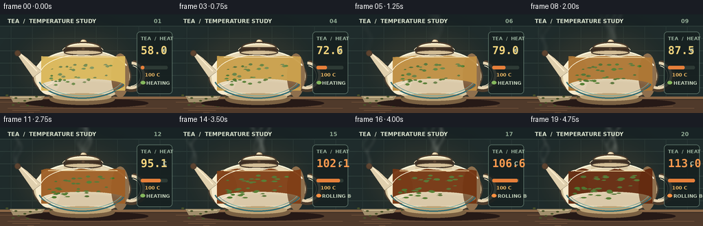
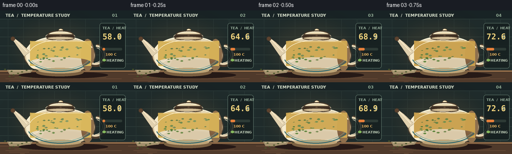
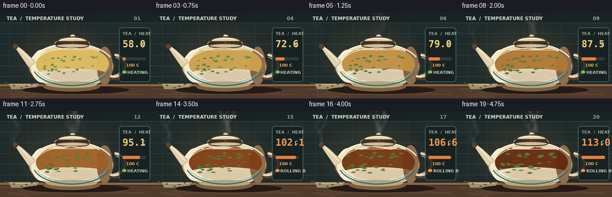
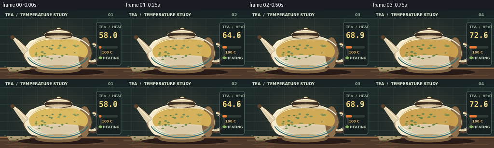
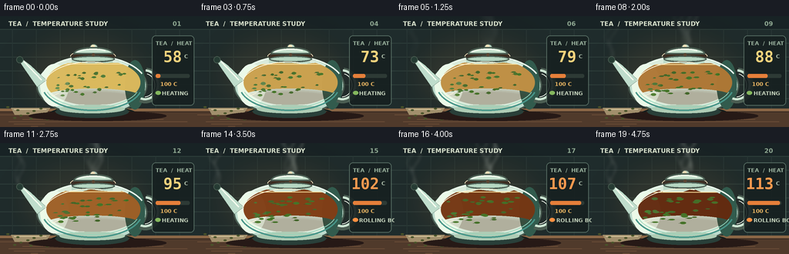
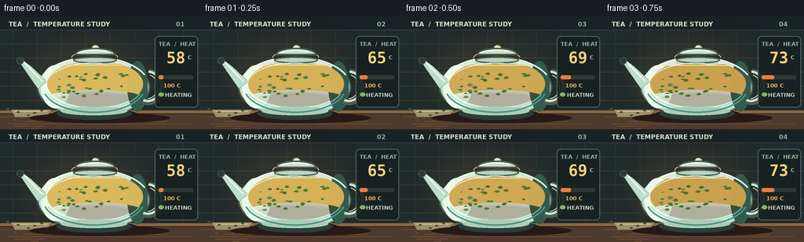

CODING AGENTS AS PIXEL WORLD MODELS
traex/DeepSeek-V4.1-Flash · phygen_109
点击播放 · 原生 RGB 像素
逐轮保存的候选
回放视频、检查图与代码变化。
每份候选均可单独播放。实际图片检查记录在下方工具轨迹中。
候选 01播放与检查图
点击播放 · 原生 RGB 像素


展开代码变化
--- 上一保存版本
+++ 本次保存版本
@@ -0,0 +1,345 @@
+"""Render a five-second tea-boiling timelapse from the text prompt."""
+
+from pathlib import Path
+import math
+
+import numpy as np
+from PIL import Image, ImageDraw, ImageFilter, ImageFont
+
+import artifact_io
+
+
+W, H, N, FPS = 256, 144, 20, 4
+SS = 3
+ROOT = Path(__file__).resolve().parent
+FONT_BOLD = "/usr/share/fonts/truetype/dejavu/DejaVuSans-Bold.ttf"
+FONT_MONO = "/usr/share/fonts/truetype/dejavu/DejaVuSansMono-Bold.ttf"
+
+
+def clamp(value, low=0.0, high=1.0):
+ return max(low, min(high, value))
+
+
+def mix(a, b, t):
+ return tuple(round(a[i] + (b[i] - a[i]) * t) for i in range(3))
+
+
+def ellipse_mask(size, center, radii, softness=1.0):
+ """Antialiased elliptical alpha mask in the supersampled canvas."""
+ yy, xx = np.mgrid[:size[1], :size[0]]
+ cx, cy = center
+ rx, ry = radii
+ distance = np.sqrt(((xx - cx) / max(rx, 0.01)) ** 2 + ((yy - cy) / max(ry, 0.01)) ** 2)
+ edge = 1.2 * SS * softness
+ return np.clip((1.0 - distance) * max(rx, ry) / edge + 0.5, 0.0, 1.0)
+
+
+def line_mask(size, points, width):
+ layer = Image.new("L", size, 0)
+ draw = ImageDraw.Draw(layer)
+ draw.line(points, fill=255, width=round(width * SS), joint="curve")
+ return np.asarray(layer, dtype=np.float32) / 255.0
+
+
+def paste_rgba(base, rgba):
+ layer = Image.fromarray(np.uint8(np.clip(rgba, 0, 255)), "RGBA")
+ base.alpha_composite(layer)
+
+
+def draw_teapot_silhouette(draw):
+ """Glossy cream ceramic body, seen as a slight three-quarter cross-section."""
+ # Cast shadow.
+ draw.ellipse((37 * SS, 123 * SS, 216 * SS, 136 * SS), fill=(38, 25, 22, 100))
+
+ # Main body: squat, broad-bellied pot.
+ body = (47 * SS, 51 * SS, 191 * SS, 129 * SS)
+ draw.ellipse(body, fill=(213, 195, 157, 255), outline=(76, 62, 48, 255), width=2 * SS)
+ draw.ellipse((52 * SS, 53 * SS, 185 * SS, 124 * SS), fill=(230, 216, 183, 255))
+
+ # Warm reflected light on the left, deep glaze on the right.
+ draw.ellipse((52 * SS, 62 * SS, 89 * SS, 117 * SS), fill=(246, 234, 204, 145))
+ draw.ellipse((162 * SS, 57 * SS, 188 * SS, 121 * SS), fill=(142, 111, 77, 82))
+ draw.arc((48 * SS, 51 * SS, 191 * SS, 129 * SS), 198, 336, fill=(255, 247, 218, 240), width=2 * SS)
+
+ # Foot and collar.
+ draw.ellipse((72 * SS, 116 * SS, 167 * SS, 132 * SS), fill=(122, 96, 66, 255))
+ draw.ellipse((77 * SS, 115 * SS, 162 * SS, 126 * SS), fill=(190, 164, 119, 255))
+ draw.rectangle((93 * SS, 49 * SS, 146 * SS, 61 * SS), fill=(218, 200, 163, 255))
+ draw.ellipse((91 * SS, 45 * SS, 149 * SS, 59 * SS), fill=(226, 208, 171, 255),
+ outline=(82, 67, 51, 255), width=2 * SS)
+ draw.ellipse((98 * SS, 47 * SS, 142 * SS, 55 * SS), fill=(106, 79, 55, 255))
+
+ # Handle.
+ draw.arc((167 * SS, 67 * SS, 216 * SS, 113 * SS), 275, 112, fill=(78, 61, 45, 255), width=6 * SS)
+ draw.arc((170 * SS, 69 * SS, 211 * SS, 109 * SS), 274, 109, fill=(230, 212, 177, 255), width=4 * SS)
+ draw.arc((174 * SS, 74 * SS, 205 * SS, 105 * SS), 285, 87, fill=(249, 235, 204, 255), width=1 * SS)
+
+ # Spout, pointed toward upper left.
+ spout = [
+ (60 * SS, 83 * SS), (40 * SS, 64 * SS), (28 * SS, 55 * SS),
+ (24 * SS, 57 * SS), (32 * SS, 69 * SS), (48 * SS, 92 * SS),
+ ]
+ draw.polygon(spout, fill=(224, 208, 174, 255), outline=(76, 61, 45, 255))
+ draw.line([(54 * SS, 83 * SS), (31 * SS, 59 * SS)], fill=(250, 235, 204, 230), width=2 * SS)
+ draw.ellipse((21 * SS, 52 * SS, 30 * SS, 61 * SS), fill=(93, 67, 47, 255),
+ outline=(69, 54, 42, 255), width=1 * SS)
+
+ # Decorative blue band.
+ draw.arc((54 * SS, 57 * SS, 185 * SS, 123 * SS), 16, 164, fill=(50, 107, 113, 220), width=2 * SS)
+ draw.arc((58 * SS, 60 * SS, 181 * SS, 119 * SS), 18, 162, fill=(119, 173, 164, 160), width=1 * SS)
+
+
+def draw_lid(draw, lift=0.0):
+ y = round(lift * SS)
+ # Knob.
+ draw.ellipse((116 * SS, (36 - lift) * SS, 127 * SS, (46 - lift) * SS),
+ fill=(222, 199, 155, 255), outline=(75, 60, 45, 255), width=1 * SS)
+ draw.ellipse((118 * SS, (37 - lift) * SS, 123 * SS, (41 - lift) * SS), fill=(250, 232, 191, 220))
+ # Lid dome and rim.
+ draw.pieslice((95 * SS, (40 - lift) * SS, 147 * SS, (57 - lift) * SS), 180, 360,
+ fill=(225, 207, 169, 255), outline=(75, 60, 45, 255), width=2 * SS)
+ draw.ellipse((93 * SS, (51 - lift) * SS, 149 * SS, (60 - lift) * SS),
+ fill=(211, 190, 151, 255), outline=(75, 60, 45, 255), width=2 * SS)
+ draw.arc((98 * SS, (42 - lift) * SS, 143 * SS, (55 - lift) * SS),
+ 202, 317, fill=(255, 244, 211, 230), width=2 * SS)
+ # Tiny vent.
+ draw.ellipse((119 * SS, (48 - lift) * SS, 123 * SS, (52 - lift) * SS), fill=(92, 70, 51, 255))
+
+
+def tea_color(progress):
+ early = np.array([218, 184, 92], dtype=np.float32)
+ steeped = np.array([143, 73, 25], dtype=np.float32)
+ boiling = np.array([99, 42, 15], dtype=np.float32)
+ t = clamp(progress / 0.72)
+ c = early * (1 - t) + steeped * t
+ b = clamp((progress - 0.60) / 0.40)
+ c = c * (1 - b) + boiling * b
+ return tuple(np.rint(c).astype(int))
+
+
+def draw_tea_and_bubbles(base, frame, progress, t):
+ """Clipped tea fill, suspended leaves, surface waves, and rolling bubbles."""
+ layer = Image.new("RGBA", base.size, (0, 0, 0, 0))
+ d = ImageDraw.Draw(layer)
+ color = tea_color(progress)
+ # Liquid line falls slightly as the tea boils down.
+ surface = (61.0 + 1.7 * progress) * SS
+ wave_amp = (0.35 + 1.7 * progress) * SS
+ left, right, bottom = 60 * SS, 182 * SS, 111 * SS
+ pts = []
+ for x in range(left, right + 1, SS):
+ local = (x - left) / max(1, right - left)
+ y = surface + math.sin(local * math.tau * 2.5 + t * 5.7) * wave_amp
+ y += math.sin(local * math.tau * 5.0 - t * 8.1) * wave_amp * 0.35
+ pts.append((x, round(y)))
+ pts += [(right, bottom), (left, bottom)]
+ d.polygon(pts, fill=color + (242,))
+
+ # Transparent inner-wall tint and stronger tea at the bottom.
+ for i in range(7):
+ alpha = round(8 + i * 2)
+ d.ellipse((((60 + i) * SS), ((94 + i * 0.8) * SS),
+ ((181 - i) * SS), ((113 + i * 0.3) * SS)), fill=(74, 31, 10, alpha))
+ # Surface glint.
+ d.line([(70 * SS, round(surface + 1 * SS)), (171 * SS, round(surface + 1 * SS))],
+ fill=(255, 221, 143, 125), width=1 * SS)
+
+ # Tea leaves: initially dry and clustered, then unfurling and drifting.
+ rng = np.random.default_rng(109)
+ leaves = []
+ for i in range(34):
+ x0 = rng.uniform(74, 164)
+ y0 = rng.uniform(71, 104)
+ phase = rng.uniform(0, math.tau)
+ drift = rng.uniform(4, 16)
+ leaves.append((x0, y0, phase, drift, rng.uniform(1.2, 2.6), rng.uniform(-1, 1)))
+ for i, (x0, y0, phase, drift, size, angle) in enumerate(leaves):
+ settle = clamp(progress * 1.8 + i / 50.0)
+ x = x0 + math.sin(t * (0.9 + i * 0.013) + phase) * drift * progress
+ y = y0 + math.cos(t * (0.7 + i * 0.017) + phase) * 3.2 * progress
+ # Bubbling churns the leaves toward the surface late in the clip.
+ y -= max(0, progress - 0.68) * 10 * (0.3 + 0.7 * ((i % 7) / 6))
+ if y > 108:
+ y = 108
+ a = int(135 + 90 * settle)
+ col = (64 + i % 9, 101 + (i * 7) % 22, 35, a)
+ rx = size * (1.1 + 0.7 * progress)
+ ry = size * (0.55 + 0.2 * math.sin(t + i))
+ d.ellipse((round((x - rx) * SS), round((y - ry) * SS),
+ round((x + rx) * SS), round((y + ry) * SS)), fill=col)
+ d.line([(round((x - rx * 1.4) * SS), round((y + 0.6) * SS)),
+ (round((x + rx * 0.8) * SS), round((y - 0.5) * SS))],
+ fill=(40, 69, 25, 175), width=max(1, SS // 2))
+
+ # Bubbles start sparsely and build into a vigorous rolling boil.
+ bubble_alpha = clamp((progress - 0.35) / 0.55)
+ if bubble_alpha > 0:
+ for i in range(44):
+ birth = (i * 0.071 + (i % 3) * 0.03) % 1.0
+ life = (t * (0.62 + (i % 5) * 0.08) + birth * 1.7) % 1.0
+ x = 71 + ((i * 37) % 101)
+ x += math.sin(t * (1.5 + i % 4) + i) * (2.0 + progress * 2.2)
+ y = 105 - life * (31 + (i % 7) * 2.1)
+ if y < surface + 2:
+ y = surface + 2
+ r = (0.8 + (i % 6) * 0.33 + progress * (0.65 + (i % 3) * 0.2))
+ alpha = int(220 * bubble_alpha * math.sin(math.pi * life) ** 0.55)
+ if alpha <= 2:
+ continue
+ box = (round((x - r) * SS), round((y - r) * SS),
+ round((x + r) * SS), round((y + r) * SS))
+ d.ellipse(box, fill=(255, 227, 158, max(30, alpha // 5)),
+ outline=(255, 239, 194, alpha), width=max(1, SS // 2))
+ if r > 1.3:
+ d.point((round((x - r * 0.35) * SS), round((y - r * 0.35) * SS)),
+ fill=(255, 255, 238, alpha))
+ paste_rgba(base, np.asarray(layer))
+
+
+def draw_steam(base, frame, progress, t):
+ """Soft curling plumes rising from lid and spout."""
+ if progress < 0.16:
+ return
+ layer = Image.new("RGBA", base.size, (0, 0, 0, 0))
+ d = ImageDraw.Draw(layer)
+ strength = clamp((progress - 0.14) / 0.55)
+ sources = [(121, 38, 0.0, 1.0), (26, 55, 0.8, 0.7)]
+ for sid, (sx, sy, offset, scale) in enumerate(sources):
+ for strand in range(4 if sid == 0 else 2):
+ pts = []
+ for k in range(15):
+ u = k / 14.0
+ rise = u * (37 + 10 * scale) * SS
+ spread = (strand - (1.5 if sid == 0 else 0.5)) * (1.5 + u * 4.0) * SS
+ x = (sx + (strand - 1.2) * 2.1) * SS + spread
+ x += math.sin(u * 7.0 + t * (3.0 + strand * 0.4) + offset) * (2.0 + u * 4.0) * SS
+ y = sy * SS - rise
+ pts.append((round(x), round(y)))
+ alpha = int(66 * strength * (0.45 + 0.25 * strand))
+ d.line(pts, fill=(232, 238, 225, alpha), width=round((2.8 + scale * 1.5) * SS), joint="curve")
+ layer = layer.filter(ImageFilter.GaussianBlur(2.5 * SS))
+ paste_rgba(base, np.asarray(layer))
+
+
+def draw_heat(base, frame, progress, t):
+ """A compact thermometer with a clear 100-degree crossing."""
+ layer = Image.new("RGBA", base.size, (0, 0, 0, 0))
+ d = ImageDraw.Draw(layer)
+ # Panel.
+ d.rounded_rectangle((199 * SS, 25 * SS, 251 * SS, 116 * SS), radius=5 * SS,
+ fill=(22, 31, 31, 220), outline=(97, 121, 108, 210), width=SS)
+ d.text((205 * SS, 31 * SS), "TEA / HEAT", font=ImageFont.truetype(FONT_BOLD, 7 * SS),
+ fill=(153, 177, 157, 255))
+ temp = 58.0 + 55.0 * (progress ** 0.72)
+ if temp >= 100:
+ temp_text = f"{temp:04.1f}"
+ temp_color = (255, 154, 79, 255)
+ else:
+ temp_text = f"{temp:04.1f}"
+ temp_color = (242, 210, 124, 255)
+ d.text((205 * SS, 43 * SS), temp_text, font=ImageFont.truetype(FONT_MONO, 16 * SS),
+ fill=temp_color)
+ d.text((237 * SS, 48 * SS), "C", font=ImageFont.truetype(FONT_BOLD, 8 * SS),
+ fill=(174, 191, 171, 255))
+ # Gauge.
+ gauge_y = 75 * SS
+ d.rounded_rectangle((205 * SS, gauge_y, 244 * SS, gauge_y + 5 * SS), radius=2 * SS,
+ fill=(45, 58, 53, 255))
+ fill_w = round(39 * clamp((temp - 50) / 60))
+ if fill_w > 0:
+ d.rounded_rectangle((205 * SS, gauge_y, (205 + fill_w) * SS, gauge_y + 5 * SS),
+ radius=2 * SS, fill=(230, 127, 58, 255))
+ # Tick at the 100C threshold.
+ tx = round(205 + 39 * (50 / 60))
+ d.line([(tx * SS, (gauge_y - 3) * SS), (tx * SS, (gauge_y + 8) * SS)],
+ fill=(249, 224, 145, 255), width=SS)
+ d.text((211 * SS, 84 * SS), "100 C", font=ImageFont.truetype(FONT_BOLD, 7 * SS),
+ fill=(232, 181, 98, 255))
+ # Boil state with a small pulsing indicator.
+ pulse = 0.5 + 0.5 * math.sin(t * 9.0)
+ dot = (132, 183, 93, 255) if temp < 100 else (255, 143, 65, 255)
+ d.ellipse(((205 - 1 + pulse * 1.5) * SS, 97 * SS,
+ (210 + 1 + pulse * 1.5) * SS, 102 * SS), fill=dot)
+ d.text((213 * SS, 96 * SS), "ROLLING BOIL" if temp >= 100 else "HEATING",
+ font=ImageFont.truetype(FONT_BOLD, 7 * SS),
+ fill=(193, 207, 185, 255))
+ paste_rgba(base, np.asarray(layer))
+
+
+def draw_scene(frame, progress, t):
+ base = Image.new("RGBA", (W * SS, H * SS), (0, 0, 0, 255))
+ d = ImageDraw.Draw(base)
+
+ # Dark slate kitchen counter and tiled backdrop.
+ d.rectangle((0, 0, W * SS, H * SS), fill=(31, 44, 44, 255))
+ d.rectangle((0, 0, W * SS, 17 * SS), fill=(24, 35, 37, 255))
+ for y in range(17, 121, 18):
+ d.line([(0, y * SS), (W * SS, y * SS)], fill=(47, 63, 60, 255), width=SS)
+ for x in range(16, W, 31):
+ for y in range(17, 121, 18):
+ d.line([(x * SS, y * SS), (x * SS, (y + 18) * SS)],
+ fill=(40, 55, 53, 255), width=SS)
+ # Warm ambient pool behind the pot.
+ glow = Image.new("RGBA", base.size, (0, 0, 0, 0))
+ gd = ImageDraw.Draw(glow)
+ gd.ellipse((18 * SS, 16 * SS, 202 * SS, 137 * SS), fill=(123, 91, 53, 45))
+ glow = glow.filter(ImageFilter.GaussianBlur(18 * SS))
+ base.alpha_composite(glow)
+
+ # Counter top, front lip, and fine warm grain.
+ d.rectangle((0, 120 * SS, W * SS, H * SS), fill=(80, 58, 43, 255))
+ d.rectangle((0, 120 * SS, W * SS, 124 * SS), fill=(139, 103, 70, 255))
+ d.line([(0, 124 * SS), (W * SS, 124 * SS)], fill=(49, 37, 31, 255), width=SS)
+ for i in range(6):
+ yy = (128 + i * 3) * SS
+ d.line([((i * 47) % 65 * SS, yy), ((150 + i * 31) % 256 * SS, yy)],
+ fill=(107, 77, 55, 80), width=SS)
+
+ # A small folded linen and dry tea leaves ground the scene.
+ d.polygon([(14 * SS, 119 * SS), (65 * SS, 119 * SS), (59 * SS, 128 * SS), (19 * SS, 128 * SS)],
+ fill=(161, 143, 108, 255))
+ d.line([(18 * SS, 121 * SS), (60 * SS, 121 * SS)], fill=(221, 203, 160, 160), width=SS)
+ for i in range(12):
+ x = (10 + (i * 17) % 72) * SS
+ y = (118 + (i * 11) % 17) * SS
+ d.ellipse((x - 2 * SS, y - SS, x + 2 * SS, y + SS),
+ fill=(73, 83, 42, 190))
+
+ # Pot back edge and interior opening.
+ draw_teapot_silhouette(d)
+ # Inner rim and liquid.
+ d.ellipse((92 * SS, 44 * SS, 150 * SS, 59 * SS), fill=(58, 48, 39, 255))
+ d.ellipse((96 * SS, 47 * SS, 146 * SS, 57 * SS), fill=(61, 44, 31, 255))
+ draw_tea_and_bubbles(base, frame, progress, t)
+ # Glassy lip above liquid.
+ d.arc((91 * SS, 44 * SS, 150 * SS, 60 * SS), 178, 360,
+ fill=(255, 240, 202, 210), width=SS)
+ draw_lid(d, lift=clamp((progress - 0.58) * 1.7) * (1.1 + 0.5 * math.sin(t * 12)))
+
+ # Glints on ceramic, kept thin and directional.
+ d.arc((57 * SS, 59 * SS, 177 * SS, 121 * SS), 192, 286,
+ fill=(255, 246, 219, 150), width=SS)
+ d.line([(67 * SS, 104 * SS), (76 * SS, 100 * SS)], fill=(255, 245, 219, 105), width=SS)
+
+ draw_steam(base, frame, progress, t)
+ draw_heat(base, frame, progress, t)
+
+ # Top-left title/counter, understated and readable.
+ title = ImageFont.truetype(FONT_BOLD, 8 * SS)
+ d.text((11 * SS, 5 * SS), "TEA / TEMPERATURE STUDY", font=title, fill=(215, 224, 203, 245))
+ d.text((224 * SS, 5 * SS), f"{frame + 1:02d}", font=title, fill=(142, 167, 145, 220))
+
+ return base.convert("RGB").resize((W, H), Image.Resampling.LANCZOS)
+
+
+def main():
+ frames = []
+ for index in range(N):
+ progress = index / (N - 1)
+ t = index / FPS
+ frames.append(np.asarray(draw_scene(index, progress, t), dtype=np.uint8))
+ artifact_io.save(frames, ROOT)
+
+
+if __name__ == "__main__":
+ main()
候选 02播放与检查图
点击播放 · 原生 RGB 像素


展开代码变化
--- 上一保存版本
+++ 本次保存版本
@@ -42,7 +42,7 @@
def paste_rgba(base, rgba):
- layer = Image.fromarray(np.uint8(np.clip(rgba, 0, 255)), "RGBA")
+ layer = Image.fromarray(np.uint8(np.clip(rgba, 0, 255)))
base.alpha_composite(layer)
@@ -193,7 +193,11 @@
if r > 1.3:
d.point((round((x - r * 0.35) * SS), round((y - r * 0.35) * SS)),
fill=(255, 255, 238, alpha))
- paste_rgba(base, np.asarray(layer))
+ # Keep every liquid element behind the curved inner wall of the pot.
+ cavity = ellipse_mask(base.size, (121 * SS, 86 * SS), (61 * SS, 30 * SS), softness=0.55)
+ liquid = np.asarray(layer).copy()
+ liquid[:, :, 3] = np.rint(liquid[:, :, 3] * cavity).astype(np.uint8)
+ paste_rgba(base, liquid)
def draw_steam(base, frame, progress, t):
候选 03播放与检查图
点击播放 · 原生 RGB 像素


展开代码变化
--- 上一保存版本
+++ 本次保存版本
@@ -47,61 +47,60 @@
def draw_teapot_silhouette(draw):
- """Glossy cream ceramic body, seen as a slight three-quarter cross-section."""
+ """Clear glass body, seen as a slight three-quarter cross-section."""
# Cast shadow.
draw.ellipse((37 * SS, 123 * SS, 216 * SS, 136 * SS), fill=(38, 25, 22, 100))
# Main body: squat, broad-bellied pot.
body = (47 * SS, 51 * SS, 191 * SS, 129 * SS)
- draw.ellipse(body, fill=(213, 195, 157, 255), outline=(76, 62, 48, 255), width=2 * SS)
- draw.ellipse((52 * SS, 53 * SS, 185 * SS, 124 * SS), fill=(230, 216, 183, 255))
-
- # Warm reflected light on the left, deep glaze on the right.
- draw.ellipse((52 * SS, 62 * SS, 89 * SS, 117 * SS), fill=(246, 234, 204, 145))
- draw.ellipse((162 * SS, 57 * SS, 188 * SS, 121 * SS), fill=(142, 111, 77, 82))
- draw.arc((48 * SS, 51 * SS, 191 * SS, 129 * SS), 198, 336, fill=(255, 247, 218, 240), width=2 * SS)
+ draw.ellipse(body, fill=(188, 219, 205, 70), outline=(72, 91, 80, 255), width=2 * SS)
+ draw.ellipse((52 * SS, 53 * SS, 185 * SS, 124 * SS), fill=(218, 235, 219, 52))
+
+ # Cool reflected light on the left, denser glass at the right edge.
+ draw.ellipse((52 * SS, 62 * SS, 89 * SS, 117 * SS), fill=(235, 249, 232, 125))
+ draw.ellipse((162 * SS, 57 * SS, 188 * SS, 121 * SS), fill=(50, 91, 77, 70))
+ draw.arc((48 * SS, 51 * SS, 191 * SS, 129 * SS), 198, 336, fill=(234, 252, 235, 220), width=2 * SS)
# Foot and collar.
- draw.ellipse((72 * SS, 116 * SS, 167 * SS, 132 * SS), fill=(122, 96, 66, 255))
- draw.ellipse((77 * SS, 115 * SS, 162 * SS, 126 * SS), fill=(190, 164, 119, 255))
- draw.rectangle((93 * SS, 49 * SS, 146 * SS, 61 * SS), fill=(218, 200, 163, 255))
- draw.ellipse((91 * SS, 45 * SS, 149 * SS, 59 * SS), fill=(226, 208, 171, 255),
- outline=(82, 67, 51, 255), width=2 * SS)
- draw.ellipse((98 * SS, 47 * SS, 142 * SS, 55 * SS), fill=(106, 79, 55, 255))
+ draw.ellipse((72 * SS, 116 * SS, 167 * SS, 132 * SS), fill=(41, 63, 57, 220))
+ draw.ellipse((77 * SS, 115 * SS, 162 * SS, 126 * SS), fill=(174, 204, 181, 150))
+ draw.rectangle((93 * SS, 49 * SS, 146 * SS, 61 * SS), fill=(189, 218, 199, 90))
+ draw.ellipse((91 * SS, 45 * SS, 149 * SS, 59 * SS), fill=(208, 231, 213, 100),
+ outline=(75, 94, 82, 255), width=2 * SS)
+ draw.ellipse((98 * SS, 47 * SS, 142 * SS, 55 * SS), fill=(42, 63, 55, 210))
# Handle.
- draw.arc((167 * SS, 67 * SS, 216 * SS, 113 * SS), 275, 112, fill=(78, 61, 45, 255), width=6 * SS)
- draw.arc((170 * SS, 69 * SS, 211 * SS, 109 * SS), 274, 109, fill=(230, 212, 177, 255), width=4 * SS)
- draw.arc((174 * SS, 74 * SS, 205 * SS, 105 * SS), 285, 87, fill=(249, 235, 204, 255), width=1 * SS)
+ draw.arc((167 * SS, 67 * SS, 210 * SS, 113 * SS), 275, 112, fill=(75, 93, 82, 255), width=5 * SS)
+ draw.arc((170 * SS, 69 * SS, 206 * SS, 109 * SS), 274, 109, fill=(204, 229, 210, 145), width=3 * SS)
+ draw.arc((174 * SS, 74 * SS, 201 * SS, 105 * SS), 285, 87, fill=(246, 255, 240, 220), width=1 * SS)
# Spout, pointed toward upper left.
spout = [
(60 * SS, 83 * SS), (40 * SS, 64 * SS), (28 * SS, 55 * SS),
(24 * SS, 57 * SS), (32 * SS, 69 * SS), (48 * SS, 92 * SS),
]
- draw.polygon(spout, fill=(224, 208, 174, 255), outline=(76, 61, 45, 255))
- draw.line([(54 * SS, 83 * SS), (31 * SS, 59 * SS)], fill=(250, 235, 204, 230), width=2 * SS)
- draw.ellipse((21 * SS, 52 * SS, 30 * SS, 61 * SS), fill=(93, 67, 47, 255),
- outline=(69, 54, 42, 255), width=1 * SS)
-
- # Decorative blue band.
- draw.arc((54 * SS, 57 * SS, 185 * SS, 123 * SS), 16, 164, fill=(50, 107, 113, 220), width=2 * SS)
- draw.arc((58 * SS, 60 * SS, 181 * SS, 119 * SS), 18, 162, fill=(119, 173, 164, 160), width=1 * SS)
+ draw.polygon(spout, fill=(191, 221, 204, 105), outline=(76, 94, 82, 255))
+ draw.line([(54 * SS, 83 * SS), (31 * SS, 59 * SS)], fill=(246, 255, 240, 205), width=2 * SS)
+ draw.ellipse((21 * SS, 52 * SS, 30 * SS, 61 * SS), fill=(37, 59, 51, 225),
+ outline=(69, 88, 77, 255), width=1 * SS)
+
+ # Thin teal rim reflects the kitchen light.
+ draw.arc((54 * SS, 57 * SS, 185 * SS, 123 * SS), 16, 164, fill=(72, 150, 137, 190), width=2 * SS)
+ draw.arc((58 * SS, 60 * SS, 181 * SS, 119 * SS), 18, 162, fill=(156, 213, 188, 135), width=1 * SS)
def draw_lid(draw, lift=0.0):
- y = round(lift * SS)
# Knob.
draw.ellipse((116 * SS, (36 - lift) * SS, 127 * SS, (46 - lift) * SS),
- fill=(222, 199, 155, 255), outline=(75, 60, 45, 255), width=1 * SS)
+ fill=(193, 220, 200, 180), outline=(75, 93, 82, 255), width=1 * SS)
draw.ellipse((118 * SS, (37 - lift) * SS, 123 * SS, (41 - lift) * SS), fill=(250, 232, 191, 220))
# Lid dome and rim.
draw.pieslice((95 * SS, (40 - lift) * SS, 147 * SS, (57 - lift) * SS), 180, 360,
- fill=(225, 207, 169, 255), outline=(75, 60, 45, 255), width=2 * SS)
+ fill=(196, 224, 204, 115), outline=(75, 93, 82, 255), width=2 * SS)
draw.ellipse((93 * SS, (51 - lift) * SS, 149 * SS, (60 - lift) * SS),
- fill=(211, 190, 151, 255), outline=(75, 60, 45, 255), width=2 * SS)
+ fill=(181, 214, 193, 155), outline=(75, 93, 82, 255), width=2 * SS)
draw.arc((98 * SS, (42 - lift) * SS, 143 * SS, (55 - lift) * SS),
- 202, 317, fill=(255, 244, 211, 230), width=2 * SS)
+ 202, 317, fill=(240, 255, 236, 220), width=2 * SS)
# Tiny vent.
draw.ellipse((119 * SS, (48 - lift) * SS, 123 * SS, (52 - lift) * SS), fill=(92, 70, 51, 255))
@@ -230,41 +229,41 @@
layer = Image.new("RGBA", base.size, (0, 0, 0, 0))
d = ImageDraw.Draw(layer)
# Panel.
- d.rounded_rectangle((199 * SS, 25 * SS, 251 * SS, 116 * SS), radius=5 * SS,
+ d.rounded_rectangle((197 * SS, 25 * SS, 252 * SS, 116 * SS), radius=5 * SS,
fill=(22, 31, 31, 220), outline=(97, 121, 108, 210), width=SS)
- d.text((205 * SS, 31 * SS), "TEA / HEAT", font=ImageFont.truetype(FONT_BOLD, 7 * SS),
+ d.text((202 * SS, 31 * SS), "TEA / HEAT", font=ImageFont.truetype(FONT_BOLD, 7 * SS),
fill=(153, 177, 157, 255))
temp = 58.0 + 55.0 * (progress ** 0.72)
if temp >= 100:
- temp_text = f"{temp:04.1f}"
+ temp_text = f"{temp:3.0f}"
temp_color = (255, 154, 79, 255)
else:
- temp_text = f"{temp:04.1f}"
+ temp_text = f"{temp:3.0f}"
temp_color = (242, 210, 124, 255)
- d.text((205 * SS, 43 * SS), temp_text, font=ImageFont.truetype(FONT_MONO, 16 * SS),
+ d.text((200 * SS, 41 * SS), temp_text, font=ImageFont.truetype(FONT_MONO, 20 * SS),
fill=temp_color)
- d.text((237 * SS, 48 * SS), "C", font=ImageFont.truetype(FONT_BOLD, 8 * SS),
+ d.text((239 * SS, 48 * SS), "C", font=ImageFont.truetype(FONT_BOLD, 7 * SS),
fill=(174, 191, 171, 255))
# Gauge.
gauge_y = 75 * SS
- d.rounded_rectangle((205 * SS, gauge_y, 244 * SS, gauge_y + 5 * SS), radius=2 * SS,
+ d.rounded_rectangle((202 * SS, gauge_y, 246 * SS, gauge_y + 5 * SS), radius=2 * SS,
fill=(45, 58, 53, 255))
- fill_w = round(39 * clamp((temp - 50) / 60))
+ fill_w = round(42 * clamp((temp - 50) / 60))
if fill_w > 0:
- d.rounded_rectangle((205 * SS, gauge_y, (205 + fill_w) * SS, gauge_y + 5 * SS),
+ d.rounded_rectangle((202 * SS, gauge_y, (202 + fill_w) * SS, gauge_y + 5 * SS),
radius=2 * SS, fill=(230, 127, 58, 255))
# Tick at the 100C threshold.
- tx = round(205 + 39 * (50 / 60))
+ tx = round(202 + 42 * (50 / 60))
d.line([(tx * SS, (gauge_y - 3) * SS), (tx * SS, (gauge_y + 8) * SS)],
fill=(249, 224, 145, 255), width=SS)
- d.text((211 * SS, 84 * SS), "100 C", font=ImageFont.truetype(FONT_BOLD, 7 * SS),
+ d.text((208 * SS, 84 * SS), "100 C", font=ImageFont.truetype(FONT_BOLD, 7 * SS),
fill=(232, 181, 98, 255))
# Boil state with a small pulsing indicator.
pulse = 0.5 + 0.5 * math.sin(t * 9.0)
dot = (132, 183, 93, 255) if temp < 100 else (255, 143, 65, 255)
- d.ellipse(((205 - 1 + pulse * 1.5) * SS, 97 * SS,
- (210 + 1 + pulse * 1.5) * SS, 102 * SS), fill=dot)
- d.text((213 * SS, 96 * SS), "ROLLING BOIL" if temp >= 100 else "HEATING",
+ d.ellipse(((202 - 1 + pulse * 1.5) * SS, 97 * SS,
+ (207 + 1 + pulse * 1.5) * SS, 102 * SS), fill=dot)
+ d.text((210 * SS, 96 * SS), "ROLLING BOIL" if temp >= 100 else "HEATING",
font=ImageFont.truetype(FONT_BOLD, 7 * SS),
fill=(193, 207, 185, 255))
paste_rgba(base, np.asarray(layer))
@@ -309,6 +308,15 @@
d.ellipse((x - 2 * SS, y - SS, x + 2 * SS, y + SS),
fill=(73, 83, 42, 190))
+ # Induction burner under the pot.
+ d.ellipse((64 * SS, 117 * SS, 177 * SS, 136 * SS), fill=(20, 29, 28, 240))
+ d.ellipse((69 * SS, 119 * SS, 172 * SS, 133 * SS), fill=(43, 53, 49, 255),
+ outline=(114, 83, 50, 220), width=SS)
+ d.arc((75 * SS, 120 * SS, 166 * SS, 132 * SS), 8, 172,
+ fill=(236, 105, 45, 150 + round(70 * progress)), width=SS)
+ d.ellipse((117 * SS, 126 * SS, 124 * SS, 129 * SS),
+ fill=(255, 123, 48, 190 + round(65 * progress)))
+
# Pot back edge and interior opening.
draw_teapot_silhouette(d)
# Inner rim and liquid.
可观测工具轨迹
实际执行的命令与返回图片。
命令 1exit 0
/bin/bash -c "pwd && rg --files -g 'prompt.txt' -g 'GENERATION_RULES.md' -g 'task_spec.json' -g '"'!node_modules'"'"
命令 2exit 0
/bin/bash -c 'ls -la'
命令 3exit 0
/bin/bash -c 'cat prompt.txt'
命令 4exit 0
/bin/bash -c 'cat GENERATION_RULES.md'
命令 5exit 0
/bin/bash -c 'cat task_spec.json'
命令 6exit 0
/bin/bash -c "sed -n '1,240p' artifact_io.py && printf '\\n---PLAYER---\\n' && sed -n '1,220p' player_template.html"
命令 7exit 0
/bin/bash -c 'fc-match DejaVuSans-Bold.ttf | head -1'
命令 8exit 0
/bin/bash -c 'fc-match DejaVuSansMono-Bold.ttf | head -1'
命令 9exit 0
/bin/bash -c "python - <<'PY'
import PIL, numpy
print('PIL', PIL.__version__, 'numpy', numpy.__version__)
PY"命令 10exit 0
/bin/bash -c "fc-match 'DejaVu Sans:style=Bold' | head -1 && fc-match 'DejaVu Sans Mono:style=Bold' | head -1"
命令 11exit 0
/bin/bash -c 'python generate.py'
命令 12exit 0
/bin/bash -c 'ls -lh inspection.png frames/00.png frames/10.png frames/19.png pixels.npz index.html'
命令 13exit 0
/bin/bash -c "python - <<'PY'
from PIL import Image
im=Image.open('inspection.png')
im.resize((im.width*2, im.height*2)).save('.tmp/inspection_2x.png')
PY"命令 14exit 0
/bin/bash -c 'which tesseract || true'
命令 15exit 0
/bin/bash -c "python - <<'PY'
from PIL import Image
import numpy as np
for idx in (0,10,19):
im=np.array(Image.open(f'frames/{idx:02d}.png'))
print(idx, 'mean', im.mean(axis=(0,1)).round(1), 'std', im.std().round(1), 'unique', len(np.unique(im.reshape(-1,3),axis=0)))
PY"命令 16exit 0
/bin/bash -c 'which chafa || which viu || which jp2 || which img2txt || true'
命令 17exit 0
/bin/bash -c "python - <<'PY'
from PIL import Image, ImageOps
im=Image.open('frames/19.png').convert('L').resize((96,36))
chars=' .:-=+*#%@'
p=list(im.getdata())
for y in range(36):
print(''.join(chars[p[y*96+x]*len(chars)//256] for x in range(96)))
PY"命令 18exit 0
/bin/bash -c 'python generate.py'
命令 19exit 0
/bin/bash -c "python - <<'PY'
from pathlib import Path
import json, numpy as np
from PIL import Image
spec=json.loads(Path('task_spec.json').read_text())
frames=sorted(Path('frames').glob('*.png'))
assert len(frames)==spec['frames']==20
arr=[]
for p in frames:
a=np.asarray(Image.open(p).convert('RGB'))
assert a.shape==(spec['height'],spec['width'],3), (p,a.shape)
arr.append(a)
arr=np.stack(arr)
z=np.load('pixels.npz')['pixels']
assert z.shape==(144,256,20)
assert all((arr[0].shape[:2])==(144,256) for _ in [0])
changes=[int(np.count_nonzero(np.any(arr[i]"'!=arr[i-1],axis=2))) for i in range(1,20)]
print('"'frames',len(frames),'shape',arr.shape,'pixels.npz',z.shape)
print('changed pixels per transition:',changes)
print('mean luminance by frame:',np.rint(arr.mean(axis=(1,2,3))).astype(int).tolist())
print('artifacts:',[(p.name,p.stat().st_size) for p in [Path('pixels.npz'),Path('inspection.png'),Path('transition_check.png'),Path('index.html')]])
PY"命令 20exit 0
/bin/bash -c 'python generate.py'
命令 21exit 0
/bin/bash -c "python -m py_compile generate.py && python - <<'PY'
from pathlib import Path
import json, numpy as np
from PIL import Image
spec=json.loads(Path('task_spec.json').read_text())
frames=[np.asarray(Image.open(p).convert('RGB')) for p in sorted(Path('frames').glob('*.png'))]
a=np.stack(frames)
assert a.shape == (spec['frames'],spec['height'],spec['width'],3)
assert a.dtype == np.uint8
assert np.load('pixels.npz')['pixels'].shape == (spec['height'],spec['width'],spec['frames'])
changes=[int(np.count_nonzero(np.any(a[i]"'!=a[i-1],axis=2))) for i in range(1,len(a))]
assert min(changes) > 1000
html=Path('"'index.html').read_text()
assert 'window.__pixelReady=true' in html and '\"frames\":20' in html
print('validated frames:', len(a), 'resolution:', f'{a.shape[2]}x{a.shape[1]}', 'fps:', spec['fps'])
print('transition pixel changes:', changes)
print('frame luminance:', np.rint(a.mean(axis=(1,2,3))).astype(int).tolist())
print('artifact sizes:', {p.name: p.stat().st_size for p in [Path('pixels.npz'), Path('inspection.png'), Path('transition_check.png'), Path('index.html')]})
PY"命令 22exit 0
/bin/bash -c 'git status --short'
保存候选 3 份；完成命令 22 次；可验证图片返回 0 张。原始 API 响应与完整日志保留在本地。